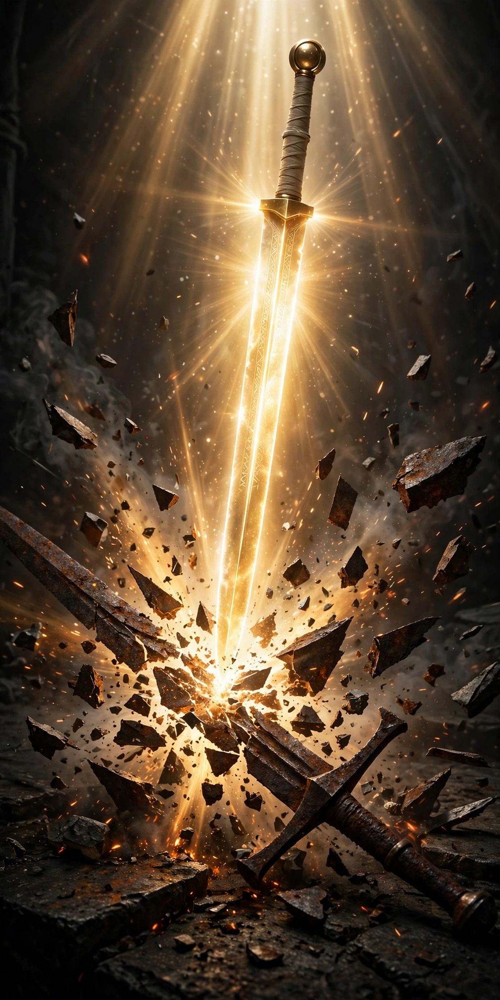

A história do cristianismo institucional é marcada por uma crônica tragédia de acomodação cultural e absorção de elementos pagãos. O rigor da fé entregue aos santos de uma vez por todas (Judas 3) foi sistematicamente diluído por dogmas e tradições humanas que antagonizam de forma frontal com o padrão estabelecido pela Igreja Primitiva. Este capítulo expõe as principais heresias dogmáticas e festividades estranhas que contaminaram a grande maioria das denominações modernas.
A assimilação de festividades de origem babilônica, romana e druídica pelas estruturas eclesiásticas representa uma violação direta do princípio da separação santa:
A Páscoa Comercial e o Ocultismo do Coelho e do Ovo: O termo "Páscoa" nas igrejas foi totalmente sequestrado pelo folclore comercial. A introdução do coelho (símbolo de fertilidade associado à deusa pagã Eostre/Astarte) e dos ovos de chocolate nada tem a ver com o sacrifício de Cristo, tratando-se de um remanescente de rituais de fertilidade primaveris europeus cristianizados à força pela Igreja Católica Romana na Idade Média.
O Natal de 25 de Dezembro e a Árvore: Jesus jamais ordenou que se comemorasse o Seu nascimento, muito menos em 25 de dezembro — data que historicamente celebrava o Dies Natalis Solis Invicti (o nascimento do Sol Invicto) em Roma e as festas das Saturnais. A árvore de Natal é uma prática expressamente condenada pelas Escrituras como culto de postes-ídolos (Jeremias 10:2-4).
As Festas Juninas: Herança de festejos solsticiais pagãos europeus (festas de São João), adaptadas pelo sincretismo católico-popular, infiltraram-se em acampamentos e festividades de igrejas evangélicas sob o pretexto de "comunhão", banalizando o altar com travestimentos mundanos.
A arquitetura e a estética dos templos modernos refletem o esvaziamento da glória de Deus. A adoção de paredes pretas, iluminação de boate e estética secular nas igrejas evangélicas não é mero detalhe visual; é a manifestação física do flerte com o mundanismo, apagando o senso de sagrado e transformando o santuário em um ambiente indistinguible de um clube noturno.
O termo "Santa Ceia" é uma cunhagem romanizada e tradicional que carrega um ranço místico herdado da missa católica. As Escrituras tratam o memorial exclusivamente como A Ceia do Senhor (1 Coríntios 11:20). Reduzir a ordenança a um adjetivo ritualístico abre brecha para a sacralização mágica dos elementos em detrimento da obediência sóbria ao mandamento de Cristo.
A Farsa do Inferno Não Literal (Tormento Eterno vs. Aniquilação): Muitas correntes teológicas liberais propagam a heresia de que o inferno é apenas um estado mental ou temporário. As Escrituras, contudo, apresentam o Lago de Fogo como um castigo eterno e consciente para os réprobos (Apocalipse 20:10, 15; Mateus 25:46).
A Heresia da Alma Naturalmente Imortal: O dogma filosófico grego de Platão sobre a "imortalidade inerente da alma" foi enxertado na teologia cristã, contradizendo a Bíblia. A imortalidade é um atributo exclusivo de Deus, concedido unicamente aos salvos em Cristo (1 Timóteros 6:15-16); os ímpios enfrentam a morte segunda e a aniquilação total (Ezequiel 18:4; Mateus 10:28).
A Cessação dos Dons Espirituais (Cessacionismo Extremista): Ensinar que os dons do Espírito Santo cessaram com a morte do último apóstolo é uma heresia que engessa a soberania de Deus. Paulo exorta a igreja a procurar com zelo os dons espirituais, sem restrições temporais (1 Coríntios 14:1; 1 Tessalonicenses 5:19-20).
Dizer que a Bíblia "contém" a Palavra de Deus — uma tese defendida pelo liberalismo teológico — abre caminho para que o homem decida o que é inspirativo e o o que é mito. O padrão da Igreja Primitiva e o testemunho interno das Escrituras afirmam taxativamente: A Bíblia NÃO apenas contém, ela É a Palavra de Deus infalível, inerrante e plenamente inspirada (2 Timóteo 3:16-17; 2 Pedro 1:20-21).
Uma das heresias mais letais que grassa em seitas disfarçadas de cristãs (e tolerada por descuido doutrinário em púlpitos pentecostais e tradicionais) é a afirmação de que Jesus foi o primeiro ser criado por Deus (ressuscitando o antigo arianismo). A exegese rigorosa de João 1:1-3, Colossenses 2:9 e Filipenses 2:5-7 estabelece que Jesus Cristo é Deus verdadeiro, coeterno e consubstancial com o Pai, o Criador de todas as coisas e não criatura:
"No princípio era o Verbo, e o Verbo estava com Deus, e o Verbo era Deus."
— João 1:1
E aí? Sua Igreja resiste aos Dogmas e Heresias ou se Prostra a eles?